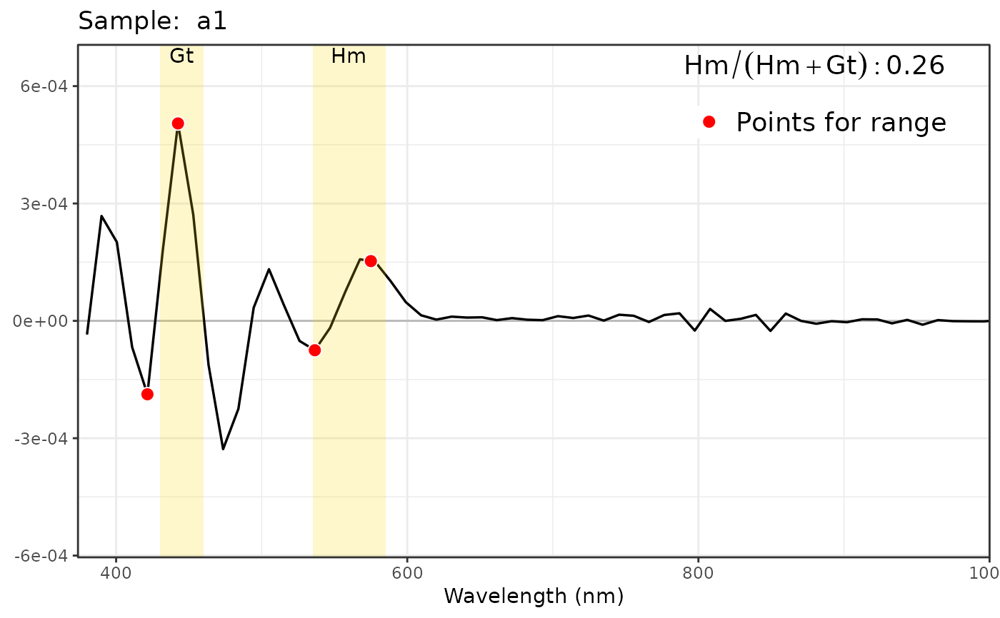

Calculates the relationship between the iron oxides hematite and goethite in soil sample: $$Hm/Gt = \frac{\text{hematite}}{\text{hematite} + \text{goethite}}$$ based on the soil's diffuse reflectance curve in the visible spectrum, the Kubelka-Munk equation, and the second derivative (Scheinost et al., 1998; Torrent et al., 2008).
Arguments
- data
A data.frame containing the input data, where the first column should be the wavelength and the remaining columns should contain the reflectance data of the sample.
- points_smoothing
The number of points used for smoothing the data to reduce noise in the spectral readings. The default value is 0.3.
- hm_gt_limits
A list containing the detection range values for hematite (hm) and goethite (gt). The default is
list(hm = c(535, 585), gt = c(430, 460)).- pv_tolerance
A numeric vector with 4 elements, each corresponding to one of the limits for hematite (hm) and goethite (gt). This value specifies the tolerance for the point values in the calculation, helping to account for small variations in the data and controlling the precision of the calculation.
- name_wave
The name of the wavelength column in the data. By default, it is set to 'wave'.
- plot
A logical value indicating whether to generate a plot of the results. If set to TRUE, a plot will be displayed; if FALSE, no plot will be shown.
Value
a data.frame with each sample in the rows and columns containing the minimum, maximum, and amplitude for Hm and Gt, along with the Hm/Gt ratio.
References
Scheinost, A. C., Chavernas, A., Barrón, V., & Torrent, J. (1998). Use and limitations of second-derivative diffuse reflectance spectroscopy in the visible to near-infrared range to identify and quantify Fe oxide minerals in soil. Clays and Clay Minerals, 46(5), 528–536. doi:10.1346/CCMN.1998.0460506
Torrent, J., & Barron, V. (2008). Diffuse Reflectance Spectroscopy. Methods of Soil Analysis, 5, 367–385. doi:10.2136/sssabookser5.5.c13
Examples
# example code
library(OxSR)
data(data_cary)
data_clean <- clean_sheet_cary(data_cary, prefix = "x")
relation_hm_gt(data_clean)
#> samples min_gt max_gt min_hm max_hm range_gt
#> 1 a1 -1.876599e-04 5.046655e-04 -7.506534e-05 1.527198e-04 6.923255e-04
#> 2 a2 -2.673028e-04 7.134340e-04 -8.025998e-06 1.537448e-04 9.807368e-04
#> 3 a3 -2.695520e-04 3.028412e-04 -3.839162e-04 4.632266e-04 5.723932e-04
#> 4 a4 6.719777e-06 3.457718e-05 -7.474568e-06 2.405089e-05 2.785741e-05
#> 5 a5 -1.002427e-04 4.520676e-04 -2.659622e-05 7.171846e-05 5.523104e-04
#> 6 a6 -1.882946e-04 2.204641e-04 -4.045027e-04 4.604842e-04 4.087588e-04
#> 7 a7 -2.692058e-04 5.339077e-04 -1.001704e-04 1.868370e-04 8.031136e-04
#> 8 a8 -1.572602e-04 1.826835e-04 -4.728502e-04 5.107560e-04 3.399437e-04
#> 9 a9 -2.393009e-04 5.451158e-04 -1.793007e-04 2.487280e-04 7.844167e-04
#> 10 a10 2.766368e-05 3.407355e-05 1.794531e-06 2.323875e-05 6.409865e-06
#> 11 a11 -2.656349e-05 2.423494e-04 2.161339e-05 5.119190e-05 2.689128e-04
#> 12 a12 -1.680259e-04 4.314742e-04 -1.245332e-04 1.945804e-04 5.995001e-04
#> 13 a13 -2.768155e-04 7.083226e-04 -1.766569e-05 1.006337e-04 9.851381e-04
#> 14 a14 -1.346742e-04 4.029725e-04 -6.738947e-05 1.300873e-04 5.376468e-04
#> 15 a15 -2.154844e-04 2.963787e-04 -3.559052e-04 4.372428e-04 5.118630e-04
#> 16 a16 2.481583e-05 7.778651e-05 7.786572e-06 3.644535e-05 5.297068e-05
#> 17 a17 -5.659948e-05 1.292789e-04 1.684172e-05 5.215624e-05 1.858784e-04
#> 18 a18 -1.615391e-05 1.292007e-04 1.144156e-05 4.328487e-05 1.453546e-04
#> 19 a19 -1.721984e-04 1.577789e-04 -3.317850e-04 3.432065e-04 3.299772e-04
#> 20 a20 -1.711089e-04 1.862278e-04 -2.817199e-04 3.232041e-04 3.573367e-04
#> 21 a21 -3.384854e-05 1.825068e-04 2.788170e-05 5.434052e-05 2.163554e-04
#> 22 a22 -3.694355e-04 7.844137e-04 -3.998390e-05 2.370903e-04 1.153849e-03
#> 23 a23 -1.657951e-04 3.048566e-04 -1.031645e-04 2.065010e-04 4.706517e-04
#> 24 a24 -1.256274e-05 1.683778e-04 -2.289067e-05 1.092308e-04 1.809406e-04
#> 25 a26 -7.897809e-05 1.678653e-04 -6.278851e-06 8.706500e-05 2.468434e-04
#> range_hm relation_hm_gt
#> 1 2.277851e-04 0.2600
#> 2 1.617708e-04 0.1196
#> 3 8.471429e-04 0.7227
#> 4 3.152546e-05 0.6354
#> 5 9.831468e-05 0.1322
#> 6 8.649869e-04 0.8318
#> 7 2.870074e-04 0.2808
#> 8 9.836062e-04 0.9167
#> 9 4.280287e-04 0.3998
#> 10 2.144422e-05 0.9521
#> 11 2.957851e-05 0.0633
#> 12 3.191135e-04 0.3923
#> 13 1.182994e-04 0.0741
#> 14 1.974767e-04 0.2879
#> 15 7.931480e-04 0.7373
#> 16 2.865878e-05 0.3972
#> 17 3.531453e-05 0.1435
#> 18 3.184332e-05 0.1701
#> 19 6.749915e-04 0.8219
#> 20 6.049239e-04 0.7650
#> 21 2.645883e-05 0.0764
#> 22 2.770742e-04 0.1886
#> 23 3.096655e-04 0.4578
#> 24 1.321215e-04 0.4912
#> 25 9.334385e-05 0.2956
# With plot
relation_hm_gt(data_clean[,1:2], plot = TRUE)

#> samples min_gt max_gt min_hm max_hm range_gt
#> 1 a1 -0.0001876599 0.0005046655 -7.506534e-05 0.0001527198 0.0006923255
#> range_hm relation_hm_gt
#> 1 0.0002277851 0.26